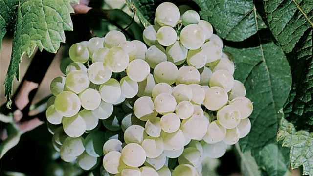

Viveiros Plansel · Montemor-o-Novo · Alentejo
成就成功葡萄园的葡萄苗。
嫁接葡萄苗，选自葡萄牙最优秀的葡萄品种。经过认证，在我们位于阿连特茹的自有苗圃中培育。

- 1975在蒙特莫尔诺武种下第一批葡萄
- ~50 %葡萄牙认证葡萄苗来自 Plansel 无性系*
- 50+年葡萄牙品种无性系选育
- 12个葡萄品种，另有砧木和鲜食葡萄
- 100 %认证种苗
* Plansel 公司数据，引自 Vinetur，2026年11月9日
 Viveiros01
Viveiros01
我们提供什么
从葡萄苗到橄榄树。
了解 Viveiros Plansel，以及我们为葡萄种植者和橄榄种植者提供的一切。
 一切的开始02
一切的开始02
一切的开始
一座改变了葡萄牙的苗圃。
在购入蒙特莫尔诺武的 Quinta de S. Jorge 之后，出生于德国、深爱葡萄牙的 Jorge Böhm 创立了 Plansel 公司。
公司随苗圃一同成长，尤其是嫁接葡萄苗——此前在葡萄牙几乎无人知晓。后来又增加了以半木质化插条繁育橄榄树的业务。

 生产03
生产03
一株葡萄苗的旅程
从枝条到可种植的葡萄苗，共八步。
从修剪到发货，所有材料均按品种、无性系和认证类别标识。
- 01剪取砧木
砧木在田间剪取，按粗细分级，机器除芽，每 200 根捆成一束并消毒。
- 02采集接穗
接穗品种的枝条在田间剪取、成捆、贴标，并按无性系和认证类别分开。
- 03冷藏
在湿度和温度受控的冷库中。
- 04嫁接
专业人员进行台式嫁接，由机器完成 Ω 形切口。
- 05层积催根
砧木与接穗放入泥炭箱，在温暖潮湿的催根室中愈合。
- 06田间育苗
葡萄苗在田间生长至秋季或冬季，由 Plansel 和官方机构检查品种与健康状况。
- 07分级与封蜡
每株葡萄苗都按法定标准检验，修剪根系后封蜡、计数，并在恒温环境中储存。
- 08发货与种植
装入衬塑料的纸箱以防干燥。种植前修剪根系，可人工或机械种植。


认证
所有种苗均经过认证。
我们以“认证”类别销售，以蓝色标签为标识。母本园的材料供应我们自己的苗圃、葡萄种植者和其他苗圃。
 葡萄品种04
葡萄品种04
Viticultura
我们繁育的品种。
来自 Plansel 无性系选育的葡萄牙葡萄品种。
- Touriga Nacional红葡萄品种
 Touriga Franca红葡萄品种
Touriga Franca红葡萄品种 Trincadeira红葡萄品种
Trincadeira红葡萄品种 Aragonez红葡萄品种
Aragonez红葡萄品种 Tinta Barroca红葡萄品种
Tinta Barroca红葡萄品种 Castelão红葡萄品种
Castelão红葡萄品种
Arinto白葡萄品种 Antão Vaz白葡萄品种
Antão Vaz白葡萄品种 Loureiro白葡萄品种
Loureiro白葡萄品种 Gouveio白葡萄品种
Gouveio白葡萄品种 Viosinho白葡萄品种
Viosinho白葡萄品种- 照片即将上传Alvarinho白葡萄品种
鲜食葡萄、砧木、无性系及数量，欢迎咨询。
 Olivicultura05
Olivicultura05

Olivicultura
橄榄树同样出自我们的苗圃。
我们以半木质化插条繁育橄榄品种，并持续跟进其技术与科学发展。
 联系06
联系06
- 地址
- Viveiros Plansel, Quinta de São Jorge
Estrada Municipal 537, Porto das Lãs
7050-203 Montemor-o-Novo, Portugal - 电子邮箱
- viveiros@plansel.com
- 电话
- +351 266 899 260
拨打葡萄牙固定电话 - 关注
- Instagram · Facebook